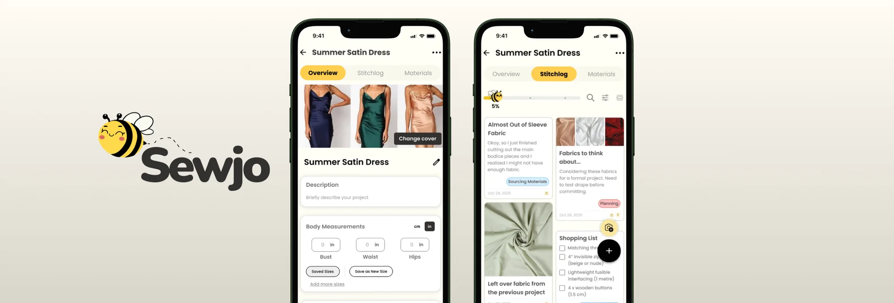
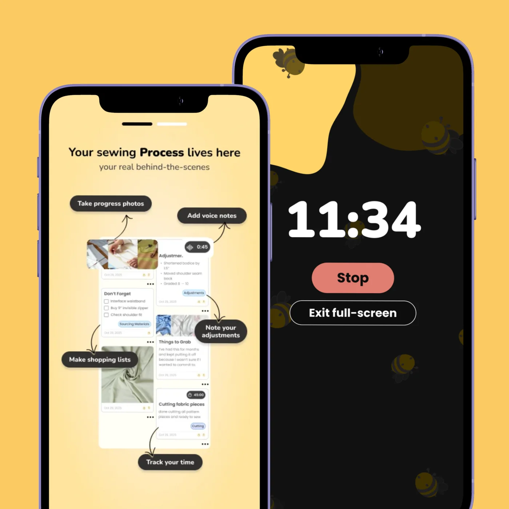

A faster way to document a sewing project

As Lead Product Designer at Sewjo, I designed one of its most requested features: StitchLog, a quick and simple way to document a sewing project as you make it.
It came down to one idea: logging should be fast enough to do with fabric still under the needle. So I built a structured project space, one-tap entries, and capture tools that keep sewers in their work instead of pulling them out of it.
- Product
- Sewjo
- Role
- Lead Product Designer
- Timeline
- January – October 2025
- Status
- Shipped
Every project gets a home
A project is more than a note. It has measurements, a deadline, a plan.
Each project opens to a full overview: name, description, target date, priority, tags. Body measurements can adapt to what you're making. Add what you need, drop what you don't.
One tap, one note, back to sewing
Tapping the plus opens a compact card with title, body, and formatting inline, no full-screen detour. Preset titles beat the blank page, dictation is built in, and any entry flips into a checklist with one tap. Each note tags by phase (Planning, Sourcing, Cutting, Sewing) so the journal stays organized on its own.
Built for quick actions
I designed every capture as a quick action, so logging never pulls you out of the work. Quick Pick snaps a photo to your log, a saved material drops in from Stash, and the timer starts, each in a single tap. You can even grab inspo from the web without leaving the app. It all lands in one place, so logging an idea never breaks your flow.

Results
- 35% Increase in daily engagement after the StitchLog restructure
- ~1,500 StitchLog entries logged each day
- Structured Projects: Sewers set up a real project space instead of facing an empty note.
- Faster logging: Quick-action cards replaced the full-screen editor, cutting the effort to capture a moment.
- Fewer app-switches: In-app capture, Stash imports, and link extraction keep sewers in one place.
 Next projectAssessing a garden the AI can't see
Next projectAssessing a garden the AI can't see